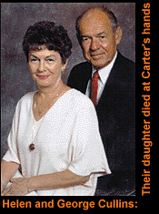

He sleeps wearing four pairs of wool socks, long underwear and sweat pants, in a room where it's sometimes so cold he can see his breath. The only light, during the day, comes from a window covered with dirt and grime. He stays indoors almost all the time because the brick walls outside are chipped with bullet holes. Also, from outside, he can see the chimney -- which, he has heard, spews smoke from the gas chamber that will eventually be used to execute him.
We know all this because Dean Carter, an inmate on death row, types a couple of pages about his life every few months, or whenever he can score a fresh typewriter ribbon. He then mails them in an envelope stamped "SAN QUENTIN" in big red letters to San Francisco radio talk-show host Alex Bennett. The KITS-FM morning personality, who vehemently opposes the death penalty, then posts the letters to the Web page "Dead Man Talkin'," at http://monkey.hooked.net/monkey/m/hut/deadman/deadman.html.
Reading Carter's ten short dispatches gives you a sense of this 40-year-old's mundane and blandly depressing existence. He rambles about complicated legal procedures, then apologizes for rambling. He debunks a vague, untrue notion that death-row residents live in luxury, with cable television and stereo systems. He signs most of his letters "Later, Dean." He doesn't write about lunchroom brawls or guys making other guys pick up the soap in the shower. He studiously avoids arguably the most relevant detail -- that he is on death row because, according to California courts, he strangled four women to death. He's accused of raping three of them. After two death sentences, prosecutors didn't bother to try him for a fifth murder they believe he also committed.
So why is this man on the Web? Bennett, a long-time Internet fan who uses his "Surfing Monkey" Web site to post journals about his radio antics and his Las Vegas vacations, says the page helps "humanize" condemned prisoners. Even if you support the death penalty, after reading Carter's "Dead Man Talkin'" columns you can't help thinking of the convicted murderer as more of a regular guy. The page contains readers' comments -- some pledges of support, some calling him a monster. Carter often responds politely to the opinions. When one electronic correspondent posted a slightly distasteful joke about death, Carter good-naturedly corrected mistakes in the punch line.
"You never name somebody you're going to have to kill someday," says Bennett, who airs his anti-death penalty views on his morning show. "You make them into a cartoon character. You call them a demon. You stick horns on their head and you stick a needle into their arm.
"I'm not sitting here defending Dean. That's not what this is about. I'm defending his right to write what he's writing," Bennett says. "A lot of people think this is a very valuable exercise in getting into the mind of somebody who's sitting there with the Sword of Damocles over his head."
"Dead Man Talkin'" has, to a small extent, made Carter an Internet celebrity. (The page attributes the inmate's writings to "Dean," and has yet to mention his last name, but a California newspaper searched state death-row lists for the name Dean and made the connection. In retrospect, Bennett says, he would have printed the letters under a fictional name.) Anti-death penalty pages all over the Web link to Dean's page, including those supporting jailed Philadelphia journalist Mumia Abu-Jamal at http://www.scn.org/scripts/menus/j/justice/mumia/inet.menu. Several California newspapers and other media outlets around the country have picked up the story.
So the Internet can do what corrections departments try desperately to avoid -- turn death-row prisoners into media stars. In California, prison officials are working on a rule to disallow face-to-face interviews between inmates and reporters. They invoke "victims' rights," fighting every play of a Charles Manson song or attempts by Son of Sam to sell a book. When this happens, the prisoners cash in while the victims' families must relive all the pain.
But officials can't restrict a page like "Dead Man Talkin'." It's not like Carter has a PC and an Internet connection in his cell. A radio DJ simply posts the inmate's typewritten letters on his own page. Even this is a difficult process for Carter. Typewriter ribbons are hard to come by in prison. Over four months passed between Carter's ninth and tenth columns. During that lull, Carter wrote much shorter blurbs responding to readers' comments.
So Carter's opponents, unable to rewrite the Constitution or block out the Internet, have resorted to more traditional approaches to his postings. Jim Pippin, a San Diego deputy district attorney who helped prosecute Carter, doesn't know much about the Web, except that he might try to sell his 1957 Studebaker Silverhawk on it. He simply wants to tell anyone who will listen what Carter did to get on death row.
In 1984, Susan Knoll's brother found her body lying face down in her Culver City, Calif., apartment. Beneath her was the body of her roommate, Gillette Mills. Knoll had been raped; Mills had probably been raped. Both women had been strangled, and police found Carter's palm print on a bathroom wall. The following month, both the bodies of Bonnie Guthrie and Janette Cullins were found in a similar condition in two different counties. Police traced the murders to Carter, who knew all the victims. He received two separate death sentences in 1990 and 1991. Carter was linked to a fifth murder in Oakland, Calif., but the case never went to trial.
"My first reaction is this. Some liberal media personality, to get ratings, is helping some serial killer get an audience to gather sympathy," Pippin says. "I think people on death row should sit there and not say a word until we kill them.
"It may be socially interesting to know what it's like on death row," Pippin says. "And what society should know is when you're on death row you have no rights," he continued. "He's complaining about food, he's complaining about showers, he's complaining about coffee. These victims are in coffins in the ground. These were very nice people whose lives he ruined."
The Internet can sell Studebakers. It can also broaden the free marketplace of ideas to a degree free-speech pioneer Oliver Wendell Holmes never imagined. Some death-row inmates have used the Web to win support for their trials. Attorneys for convicted murderer Girvies Davis, after pleading their case on the Web, spurred 1,300 people to send e-mail pleas of clemency to the governor of Illinois. They failed -- Davis was executed in 1994 -- but he earned massive media support and national attention. "If we would have been successful, there would probably be 10,000 death-row inmates with home pages today," says Brian K. Murphy, an associate attorney with the Chicago-based firm Jenner and Block who set up Davis' page.
As it is, there are only a few. Davis' page at http://www.mcs.net/~bkmurph/ girvies.htm still stands as a memorial to the executed man. Virginia death row inmate Joseph Roger O'Dell III, whose lawyers say DNA evidence casts doubt on his conviction, pleads his case at http://www.gbiz.copm/odell. There are countless pages about Abu- Jamal, the high-profile journalist and convicted murderer whose supporters say was jailed for his political views. It's simple to find anti-death penalty pages with Yahoo!, WebCrawler or any other search engine; for some reason, that perspective dominates the Internet. The pro-death penalty sites tend to be slight or written by prosecutors' offices and filled with public policy rhetoric and notes on impending legislation.
 But at "Citizens for Law and Order Talking" at http://www.deltanet.com/users/ghc/, George H. Cullins delivers passionate rebuttals to "Dead Man Talkin'." Cullins, a 73-year-old retired U.S. Marine, is an outspoken advocate of the death penalty. He's also the father of one of Carter's dead victims. During a phone interview from his home in Oceanside, Calif., he sometimes interrupts questions to meticulously quote statistics linking the death penalty to falling murder rates.
Cullins wishes Carter wasn't allowed to air his views on the Internet. But he understands that censorship is illegal and there's nothing he can do about it. "My feeling is if it goes on the Web page, then the victim should have one that goes right alongside of it," Cullins says. "If I can show through my Web page the lies that this man has created, then it shows he is one of the greatest con artists that ever existed," Cullins says. "The only thing I'm trying to do is turn something in a positive vein something that's the most negative thing that can happen to any family."
Cullins' page contains facts about homicides and e-mail addresses for pro-death penalty groups as Citizens Against Homicides (mailto:vctmsmurdr@aol.com) and his own Citizens for Law and Order (ghc@mail.deltanet.com).
Also, like Carter, Cullins appeals to Web surfers' emotions. Where the inmate never even mentions the murders, Cullins explains in brutal detail how Carter strangled the women to death with his bare hands. "For your information, in doing this action, it only takes 20 to 30 seconds to render his victim unconscious, but it takes an additional hold of the grip for three to five minutes more to bring death," Cullins writes on his page. "After he did this deed he cut his victims to see if they would bleed. If they didn't, he accomplished bringing death."
For fairness and a point of reference, Cullins' page contains a link to "Dead Man Talkin'," with an accompanying picture of Bennett. The radio DJ, however, isn't convinced Cullins' methods are so noble and constitutional. Bennett rips Cullins for contacting KITS advertisers and encouraging them to boycott his program (This, of course, is another form of free speech). No advertisers have decided to boycott, Bennett says, but Cullins' attempts have made him angry.
"I think where it's wrong is my radio program has nothing to do with my Web site," Bennett says. "You want to go after the advertisers on my Web site, OK. But you want to go after my radio station advertisers? And for all the threats, he's really done nothing."
In the end, the oddest thing about "Dead Man Talkin'" is how Carter's crimes, trial or conviction are never mentioned. At the beginning of his first column, Carter maintains his innocence, but that's all he'll say about the case. Instead, he focuses on the maddening details of living in prison: "Occasionally," he writes, "there will be someone that will start screaming in the middle of the night, but if I turn up my radio and adjust my headphones, it isn't too distracting."
It's an ironic thing to note, because the purpose of "Dead Man Talkin'" is to let Carter start screaming in the middle of the 'net. The whole reason this has come into the public eye is because some people haven't turned up their radios and adjusted their headphones. Death-penalty opponents hope it stays that way.